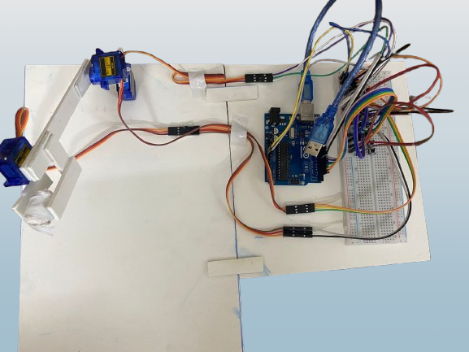
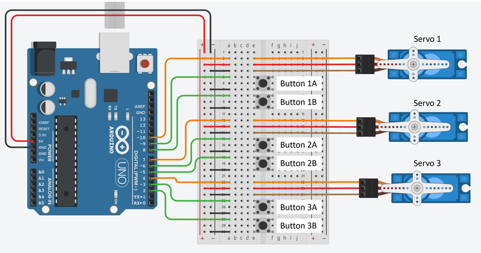

Academic Project
Three-Axis Robotic Arm
Designed and built a robotic arm with three-axis rotation using servo motors and an Arduino Uno, including full circuit design and button-based control logic.
View Project Details →
The arm uses three servo motors, each independently controlled through a dedicated push-button pair wired to the Arduino Uno's digital pins — one button to rotate a joint forward, the other in reverse — rather than a single continuous-motion controller. The circuit was built and tested on a breadboard before being wired into the final frame, with each servo's power draw and signal line kept separate to avoid voltage drops affecting motion accuracy. The build served as a hands-on introduction to embedded control logic — sequencing multiple actuators from simple digital inputs — which is the same basic principle scaled up in most automation and robotics systems.